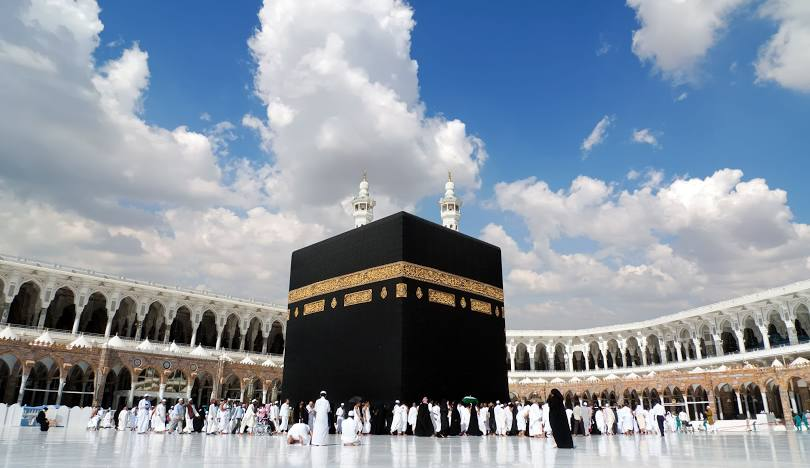

My Favorite Food
Garlic Bread
Description: Garlic bread is my all-time favorite. I love the crispy texture combined with the rich and savory taste of garlic butter. It pairs perfectly with a warm bowl of creamy mushroom soup, which has a smooth texture and earthy flavor that I can't get enough of.
Spaghetti
Description: Spaghetti is one of my all-time favorite dishes. I love the rich, savory flavors of the sauce combined with the soft pasta. Whether it's classic marinara, creamy Alfredo, or bolognese, spaghetti always satisfies my taste buds.
Makkah
Why Makkah? Makkah is my dream place to visit for spiritual growth. As the holiest city in Islam, it holds immense significance for millions of Muslims around the world. I aspire to visit someday to experience the deep peace and sanctity it offers. The sense of devotion and unity felt by pilgrims at the Kaaba is something I truly hope to witness firsthand, and I believe it will be a transformative experience in my life.
Click on the Kaaba in the image for more information.